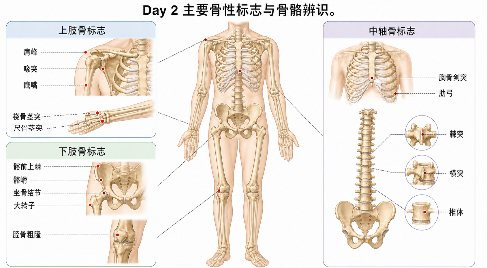

骨性标志是教练的“定位系统”。你不是在背冷门名词，而是在学怎么把手放到客户身上，准确找到肩、髋、膝、脊柱这些训练问题发生的位置。
沿锁骨向外摸到肩最外侧的硬突起，就是肩峰。它不是肱骨头，也不是三角肌肉块。
训练含义侧平举、推举、卧推评估都绕不开肩峰。肩峰下方空间过窄，可能出现夹挤感；这时不能只说“肩不舒服”，要知道疼点和结构在哪里。
常见误解❌把肩峰当成肩关节本身。✅肩峰属于肩胛骨，是肩关节上方的骨性屋檐。
喙突在锁骨外侧下方、肩前方深处，触摸时常有压痛。它像肩胛骨伸出来的“小钩”。
训练含义圆肩、胸小肌紧张、肩前侧不适时，喙突附近常是评估线索。学到胸小肌和喙肱肌时，这个点会反复出现。
手肘弯曲时后方突出的硬尖就是鹰嘴，属于尺骨近端。平板支撑肘撑、窄距俯卧撑、臂屈伸都能用它判断肘的位置。
训练含义肱三头肌发力最终通过鹰嘴附近作用到尺骨，让肘伸直。做臂屈伸时肘后疼，要分清是肌腱、滑囊还是关节压力。
手腕外侧、拇指同侧的突出点是桡骨茎突。它帮你判断前臂旋前旋后、手腕中立位和握姿。
训练含义卧推、俯卧撑、壶铃前架位都需要腕部中立。桡骨茎突位置能帮助判断手腕是不是过度后伸或偏斜。
把手放在腰两侧髂嵴，沿着骨边往前下方摸，会摸到一个明显前突点，就是髂前上棘。它常和髂后上棘配对，用来判断骨盆前倾/后倾。
训练含义深蹲、硬拉、弓步里，骨盆位置影响腰椎受力和髋发力。找不到髂前上棘，就很难客观判断骨盆位置。
常见误解❌把整条髂嵴当髂前上棘。✅髂嵴是边，髂前上棘是前方的点。
坐硬凳时臀部下方压到的骨点，就是坐骨结节区域。腘绳肌从这里起，向下跨过膝关节。
训练含义罗马尼亚硬拉、腿弯举、腘绳肌拉伸都要理解“坐骨结节到小腿”的拉索方向。坐骨结节附近疼痛不一定是“臀疼”，可能与腘绳肌近端肌腱有关。
站立时摸髋外侧最突出的硬点，多数就是大转子。它不是髂嵴，也不是骨盆的一部分，而是股骨近端。
训练含义臀中肌、臀小肌、梨状肌等都和大转子区域关系密切。侧卧外展、蚌式、单腿稳定训练中，髋外侧感觉常在这里附近。
棘突是背后一排能摸到的点；横突在更深更侧方，通常不容易直接摸清。胸骨剑突在胸骨下端，肋弓是下肋缘。
训练含义做呼吸训练、胸椎活动度、核心稳定评估时，要知道胸廓和脊柱边界。比如“肋骨外翻”不是腹肌弱一个原因，它还和呼吸、胸廓位置、骨盆位置配合有关。
| 区域 | 骨性标志 | 最常用场景 |
|---|---|---|
| 肩 | 肩峰、喙突 | 肩袖、圆肩、推举卧推评估 |
| 肘腕 | 鹰嘴、桡骨茎突 | 肱三头肌、握姿、腕中立 |
| 骨盆 | 髂前上棘、髂嵴、坐骨结节 | 骨盆倾斜、腘绳肌起点 |
| 髋膝 | 大转子、胫骨粗隆 | 髋定位、膝伸肌链 |
| 中轴 | 棘突、剑突、肋弓 | 脊柱、呼吸、核心评估 |
❌ 看肌肉鼓起来的位置就等于找到骨点。✅ 肌肉会变厚，骨点更稳定。
❌ 摸到痛点就直接判断损伤。✅ 触诊只能提供线索，还要结合动作、疼痛史和功能测试。
❌ 只会在解剖图上认。✅ 教练真正需要的是在自己和客户身上快速定位。
1. 腘绳肌近端起点常定位在哪?
2. 判断骨盆前倾最常用哪类标志?
3. 多选: 哪些与肩部评估直接相关?
4. 案例: 客户说“髋外侧酸”，你先摸哪个骨点帮助定位?